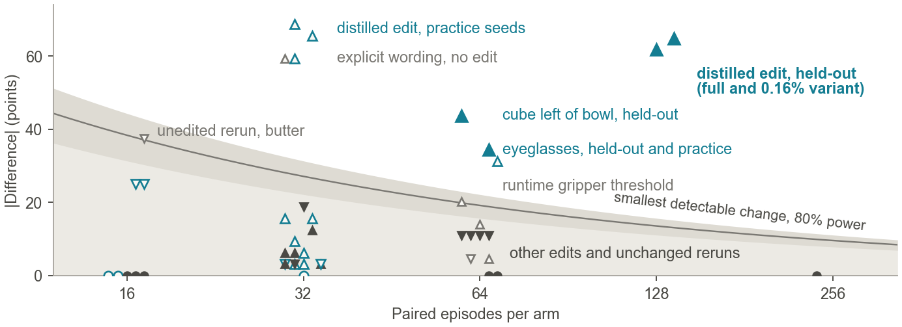

Distilling Instructions into Weights: Closed-Form Edits Fix a Robot Policy’s Misreading
We fixed a robot’s misreading by editing its weights
A 3.35-billion-parameter robot policy drops a cube because it reads “in the bowl” as belonging to the banana. We fixed it with one closed-form edit to its weights, with no training, no new data and the same instruction: on 128 starts it had never seen, success rose from 21% to 83% (27/128 → 106/128). The same edit lifted two tasks it was never built for, picking up eyeglasses (22/64 → 44/64) and putting the cube left of the bowl (8/64 → 36/64).
What goes wrong
Move “in the bowl” next to the cube, and the robot stops dropping it.

Renaming the cube changed nothing. Moving “in the bowl” next to the cube left one to three releases of 21, and in one attention head the destination words attend to the adjacent noun far more than to the first one (0.69 against 0.02). We read this as a binding error: holding the cube, the policy treats the banana as the object that belongs in the bowl.
The skill is intact. Worded explicitly, “put the cube in the bowl then put the banana in the bowl,” the same weights succeed in 22 of 32 episodes, against 3 of 32 for the original wording on the same seeds. The network can do the task; it misreads the request.
The fix
We wrote the explicit wording’s effect into the weights, in closed form.
![Share of 21 replayed releases that persist under each weight edit, in the order they were built: steering along a correlated axis 21 of 21, copying the mean shift at the state tokens 6 of 6 checked, copying per-position shifts at 40 prompt and state positions 15, 13 and 8 of 21 at strengths one half, one and two, and adding 32 image cells, the distilled edit, 0 of 21, with 25 of 32 against 3 of 32 on practice seeds and 106 of 128 against 27 of 128 held out. Variants: image cells only 0, all keys in layers 8 to 16 only 0, half strength 2, image cells in layers 8 to 16 (0.16 percent) 2, with 102 of 128 against 19 of 128 held out, and image cells plus preservation keys 1, with 24 of 32 against 3 of 32.](assets/fig/construction.svg)
At each of 17 layers of the vision-language model, the keys K are the mean inputs to the MLP’s down-projection under the original instruction, at 40 prompt and state positions and 32 image cells, averaged over 6 recorded decisions. The values V are how much the layer changes the residual stream under the explicit wording, minus the original. The edit is the minimum-norm map from keys to values:
ΔW = K⊤(KK⊤ + λI)−1Vλ = 10−3 · tr(KK⊤) / 72
No optimizer and no training data are involved: this is the multi-key closed form used to rewrite stored associations in language models (MEMIT), with rank at most 72 per layer. On the 128 held-out starts it fixed 81 and broke 2 (exact McNemar p = 7×10−22). A 0.16% version that edits only the image cells, in layers 8–16, did as well: 102/128 against 19/128. Our working hypothesis† is that the instruction is read into the image representation that the action expert consults when it decides whether to keep holding.
Does it transfer?
Built for one task, the same edit lifted two others on starts it had never seen.
We ran the edit unchanged on the other 15 surveyed tasks. Besides these two (31 fixed and 9 broken, and 33 fixed and 5 broken), no difference was significant. Putting the cube to the right of the bowl stayed at 0/32, so the edit is not a general switch for spatial language; our working hypothesis† is that it strengthens how the network ties a destination phrase to the object being carried.
What didn’t work
The fix flipped outcomes one way. Every other edit flipped them both ways, like rerunning the unedited policy.
![Stacked bars split each comparison’s paired starts into broke, both succeed, both fail and fixed. The distilled edit on its own task is almost entirely fixed or unchanged: 81 fixed and 2 broke held out, 86 and 3 for the 0.16 percent variant. Eyeglasses 31 fixed and 9 broke, cube left of bowl 33 and 5, held out. Perception edits break about as many pairs as they fix, for example 9 fixed and 16 broke. The one-weight gripper edit fixed 37 and broke 37 of 240. Unchanged-weight reruns also flip many pairs both ways, for example 17 and 20.](assets/fig/outcomes.svg)
On 128 held-out starts the distilled edit fixed 81 and broke 2. A single gripper weight, across seven tasks, fixed 37 and broke 37, and a plain rerun of the unedited policy on the stacking task flipped 17 one way and 20 the other. Our edits for perception, a missing grasp, contact physics and the gripper threshold all look like the rerun, not like the fix.
Each of those failures lacked something the fix had. The arm reaches for a lookalike object although the vision-language model tells the two apart (d′ ≈ 10–20); the action expert barely uses the difference (d′ ≈ 2–3), and nine edits from Claude and GPT-6 Astra could not make it. A flat box wider than the gripper opening was never picked up, after ten edits. A mustard bottle that slips from a cap grasp offered no wrong decision to correct (|ρ| ≤ 0.26).
Measuring carefully
The same weights on the same seeds scored 14/16, then 8/16.

Pairing seeds does not make episodes identical: about a third of paired outcomes flip between identical runs. With that much noise, one paired comparison reliably detects only changes of about 27 points with 32 pairs, 19 with 64 and 14 with 128. A 16-episode screen is a filter, not evidence. The distilled edit clears the bound on held-out seeds; every failed edit and every unchanged-weight rerun falls below it.
What this means
The edit re-routed something the network already computes. No edit created what was missing.
The fix had three ingredients: a skill the policy demonstrably has, a failure traced to one computation, and a known-good internal state to copy. Each failure lacked one. The rule we take from it: edit when you can show the network does the right thing under some input, and train when it cannot. The strongest outside reports agree; they edited checkpoints already fine-tuned on each task‡.
The limits are real. The edit is low-rank, not sparse: it changes 13.4% of the stored values. Finding it needed a known-good instruction. It was built by an operator session, also Claude Opus, under the editor rules, not by an autonomous editor. Its transfer was not predictable in advance. And it ran on one zero-shot checkpoint, in simulation.
We gave the same tools to seven blind AI editors
In a controlled study, Claude Opus at extra-high effort edited one RoboLab task for each kind of failure (a two-step instruction, a spatial relation, assembly by stacking, lookalike perception, grasp-and-carry, thin-object pickup and flat-object pickup) under an identical budget of 32 development episodes for the unedited policy plus two 32-episode candidates, with closed-form edits only, and each submission was scored on held-out starts it never saw.
| Task | Failure kind | Submission | Dev result | Held-out base → edit | p |
|---|
Try it
Bring an editor; we score its one frozen edit on starts it never sees.
git clone https://github.com/adeeb10abbas/weightsmith && cd weightsmith
export WSP_HOST=gpu-box WSP_REMOTE_REPO=weightsmith WSP_ROOT=/data/wsp/my-task
bin/owsp statusbin/owsp is the editor’s only tool: it reads weights, captures activations on recorded inputs and runs paired practice rollouts on a GPU host set up with docs/SETUP.md. The rules are in BENCHMARK.md and the entries in LEADERBOARD.md; no autonomous editor has an accepted edit yet. Every comparison in this article is in the explorer.
Earlier work by the authors
Jacta: A Versatile Planner for Learning Dexterous and Whole-body Manipulation
A sampling-based planner that generates dexterous and whole-body manipulation demonstrations for learning policies.
Cite
@misc{abbas2026distilling,
title = {Distilling Instructions into Weights: Closed-Form Edits
Fix a Robot Policy's Misreading},
author = {Abbas, Ali-Adeeb and Seraj, Esmaeil},
year = {2026},
howpublished = {\url{https://adeeb10abbas.github.io/weightsmith/}},
note = {arXiv preprint, forthcoming}
}† marks our hypotheses and ‡ results others reported that we did not reproduce; everything else is measured on paired simulator seeds. Every number on this page comes from the paired comparisons in comparisons.json, the held-out result files and the paper. The figures are drawn by the paper’s plotting code, re-rendered for the screen.
The opening video shows held-out start 90002, the start in the paper’s Figure 1, and the transfer videos held-out start 90000; each is one illustrative start where only the edited policy succeeds. The video runs the 15 Hz simulation at twice real time, one control step per frame, and the timeline under it is drawn from the logged gripper commands and events of that start. The editor study with GPT-6 Astra is a companion to this work, in the same repository.
This work builds on weight-space programming (Takehi et al.) and uses OpenPI’s π0.5 DROID checkpoint and NVIDIA’s RoboLab tasks in Isaac Sim. ‡ Guo and Xie report gains on π0.5 checkpoints fine-tuned on each task; we did not reproduce them.